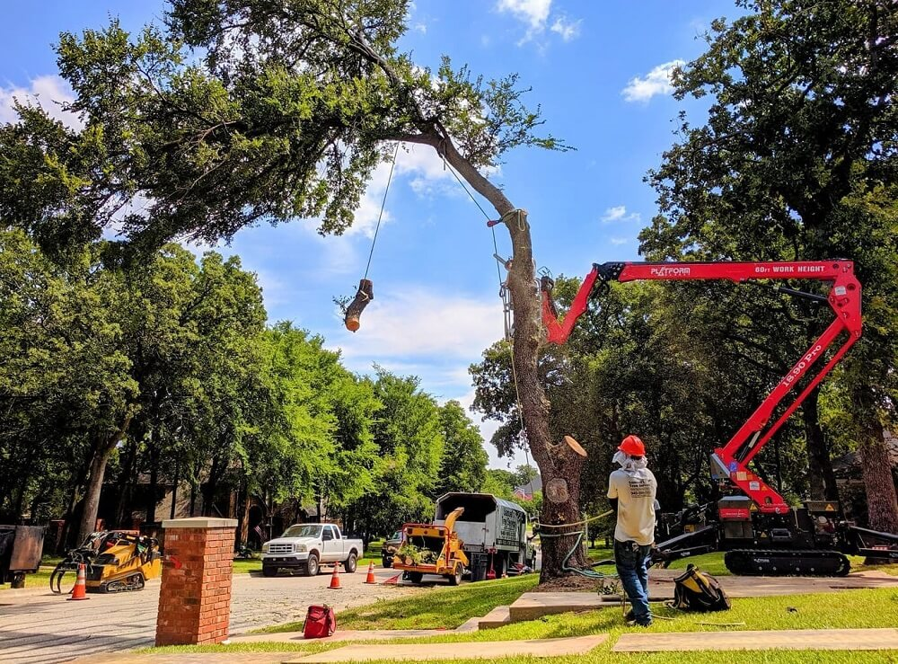
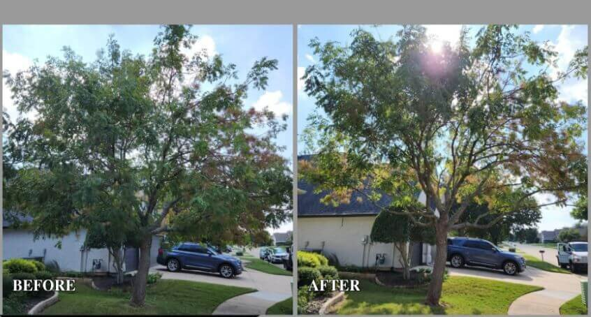
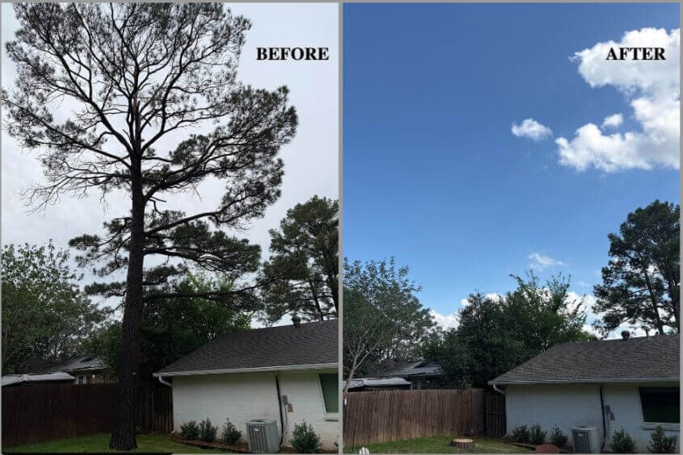
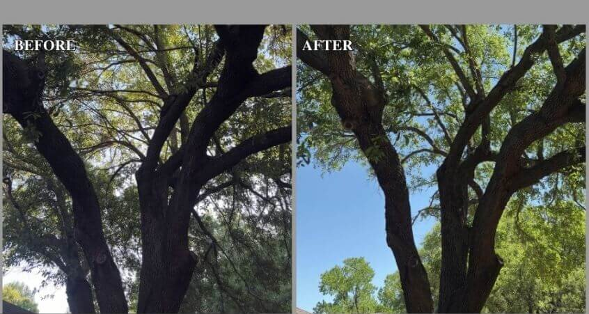
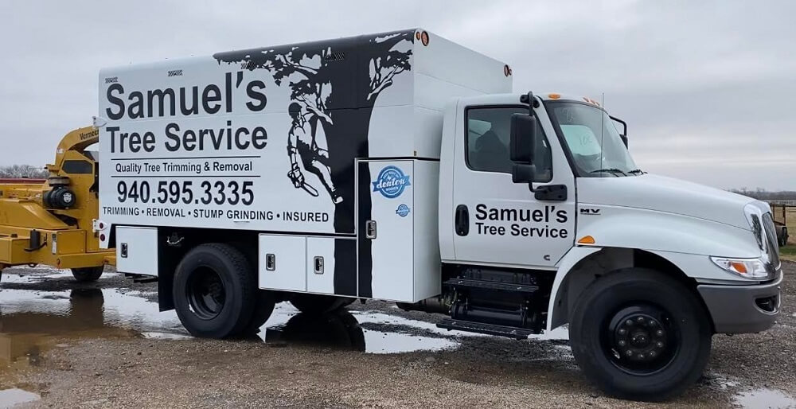
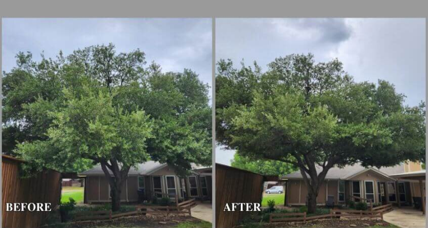
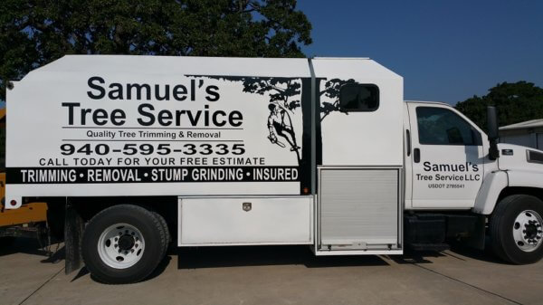

The work speaks
for itself.
Real trees, real Denton-area properties, real before-and-afters. Tap any photo to see it full size.
Before / After Crown thinning on a lakeside oak
Crown thinning on a lakeside oak
Crown thinning on a lakeside oak

Crane-assisted removal, Denton
Before / After

Canopy raise over a two-story home Storm-toppled oak across a driveway
Storm-toppled oak across a driveway
 Climber pruning a mature canopy
Climber pruning a mature canopy
Before / After

Structural pruning, full property Stump ground below grade
Stump ground below grade
Before / After

Clearance pruning near the roofline Removal & chipping in progress
Removal & chipping in progress

On-site for a free estimate
Before / After

Before & after on a backyard oak
The Samuel's Tree Service fleet
5.0 across 950+ reviews
Denton keeps
Denton keeps
calling us back.
Five stars on Google across more than 950 reviews, an A+ with the BBB, and Best of Denton six years running. Here's a sample — read the rest on Google.
★★★★★
We had a great experience with Samuel's Tree Service. They came out on time, did the job efficiently and left our yard neat and tidy.
DDebra R.Google Review
★★★★★
A very good experience. I highly recommend Samuel's Tree Service. They are prompt and efficient.
CCarolyn N.Google Review
The tree isn't going to
get smaller.
Tell us what you're looking at and we'll come give you a straight estimate — no pressure, no hidden fees, no charge for work you didn't authorize.